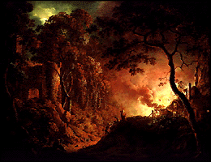

|
European 18th-Century Art | |
|
(c) |
Joseph Wright of Derby |
|
Sir Joshua Reynolds, Thomas Gainborough, and Sir John
Everett Millais are represented in this collection of
portraits, landscapes, and religious and allegorical
subjects. | |